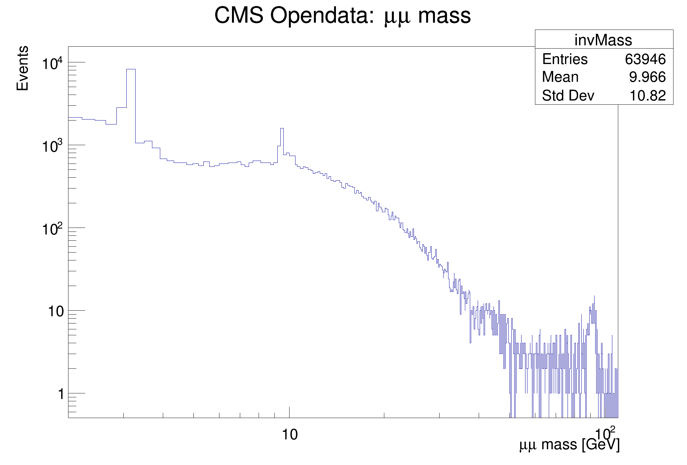
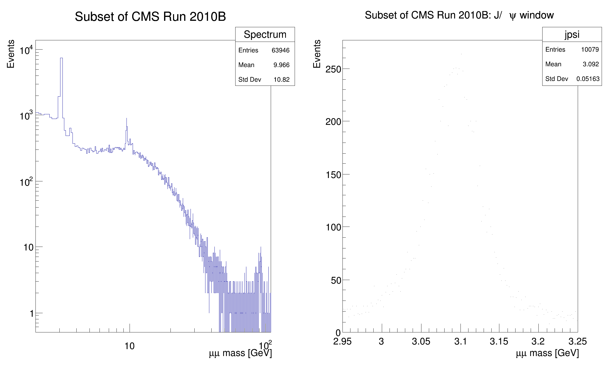

This tutorial illustrates how use the RDataFrame in combination with a RDataSource.
This tutorial illustrates how use the RDataFrame in combination with a RDataSource.
In this case we use a TCsvDS. This data source allows to read a CSV file from a RDataFrame. As a result of running this tutorial, we will produce plots of the dimuon spectrum starting from a subset of the CMS collision events of Run2010B. Dataset Reference: McCauley, T. (2014). Dimuon event information derived from the Run2010B public Mu dataset. CERN Open Data Portal. DOI: 10.7483/OPENDATA.CMS.CB8H.MFFA.
import ROOT
fileNameUrl = "http://root.cern.ch/files/tutorials/df014_CsvDataSource_MuRun2010B.csv"
fileName = "df014_CsvDataSource_MuRun2010B_py.csv"
ROOT.TFile.Cp(fileNameUrl, fileName)
MakeCsvDataFrame = ROOT.ROOT.RDF.MakeCsvDataFrame
filteredEvents = tdf.Filter("Q1 * Q2 == -1") \
.Define("m", "sqrt(pow(E1 + E2, 2) - (pow(px1 + px2, 2) + pow(py1 + py2, 2) + pow(pz1 + pz2, 2)))")
invMass = filteredEvents.Histo1D(("invMass", "CMS Opendata: #mu#mu mass;#mu#mu mass [GeV];Events", 512, 2, 110), "m")
c = ROOT.TCanvas()
c.SetLogx()
c.SetLogy()
invMass.Draw()
fullSpectrum = filteredEvents.Histo1D(("Spectrum", "Subset of CMS Run 2010B;#mu#mu mass [GeV];Events", 1024, 2, 110), "m")
jpsiLow = 2.95
jpsiHigh = 3.25
jpsiCut = 'm < %s && m > %s' % (jpsiHigh, jpsiLow)
jpsi = filteredEvents.Filter(jpsiCut) \
.Histo1D(("jpsi", "Subset of CMS Run 2010B: J/#psi window;#mu#mu mass [GeV];Events", 128, jpsiLow, jpsiHigh), "m")
dualCanvas = ROOT.TCanvas("DualCanvas", "DualCanvas", 800, 512)
dualCanvas.Divide(2, 1)
leftPad = dualCanvas.cd(1)
leftPad.SetLogx()
leftPad.SetLogy()
fullSpectrum.Draw("Hist")
dualCanvas.cd(2)
jpsi.Draw("HistP")


- Date
- October 2017
- Author
- Enric Tejedor
Definition in file df014_CSVDataSource.py.

 ROOT 6.18/03 - Reference Guide Generated on Thu Aug 29 2019 04:10:05 (GVA Time) using Doxygen 1.8.14.
ROOT 6.18/03 - Reference Guide Generated on Thu Aug 29 2019 04:10:05 (GVA Time) using Doxygen 1.8.14.